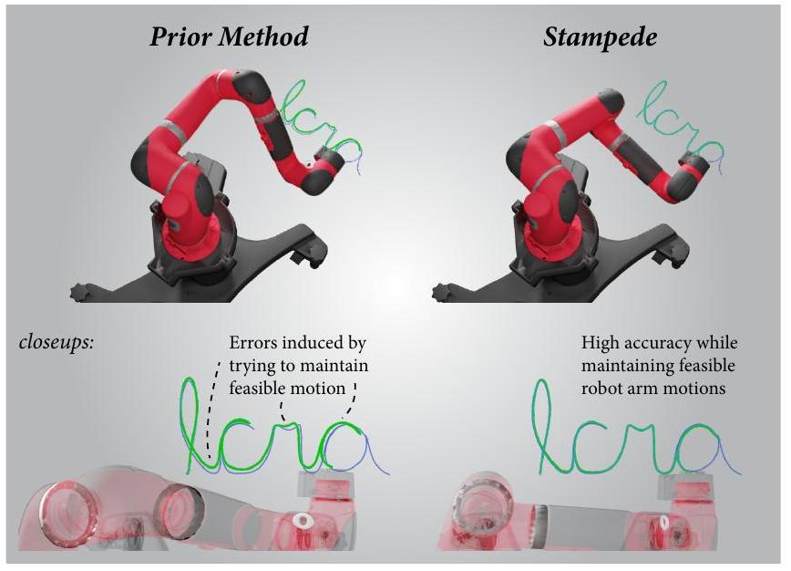
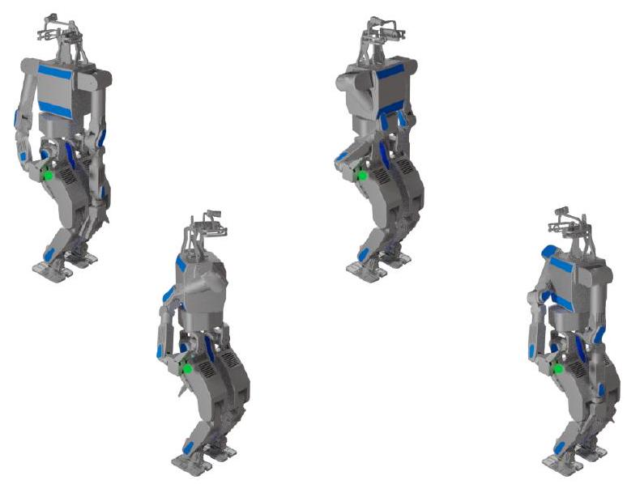
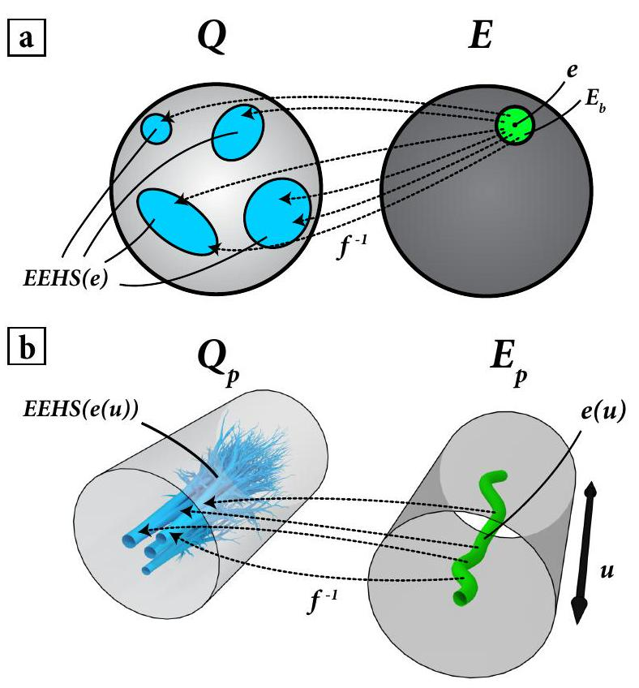
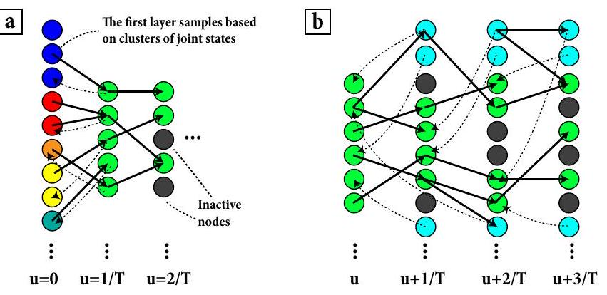

Daniel Rakita, Bilge Mutlu, Michael Gleicher
Department of Computer Sciences, University of Wisconsin-Madison
{rakita,bilge,gleicher}@cs.wisc.edu
We present a discrete-optimization technique for finding feasible robot arm trajectories that pass through provided 6-DOF Cartesian-space end-effector paths with high accuracy, a problem called pathwise-inverse kinematics. The output from our method consists of a path function of joint-angles that best follows the provided end-effector path function, given some definition of "best". Our method, called Stampede, casts the robot motion translation problem as a discrete-space graphsearch problem where the nodes in the graph are individually solved for using non-linear optimization; framing the problem in such a way gives rise to a well-structured graph that affords an effective best path calculation using an efficient dynamicprogramming algorithm. We present techniques for sampling configuration space, such as diversity sampling and adaptive sampling, to construct the search-space in the graph. Through an evaluation, we show that our approach performs well in finding smooth, feasible, collision-free robot motions that match the input end-effector trace with very high accuracy, while alternative approaches, such as a state-of-the-art per-frame inverse kinematics solver and a global non-linear trajectoryoptimization approach, performed unfavorably.
In order to complete tasks, robots need to consistently actuate their joints such that their end-effectors pass through the correct position, with the correct orientation, at the correct time. While the problem of converting from a single end-effector pose goal to a robot joint-state as quickly and accurately as possible at a single time-point has been extensively investigated (this process is traditionally called inverse kinematics), finding a path of feasible joint angles that accurately match a path of end-effector pose goals over time has remained a difficult and elusive problem. To illustrate, prior work has showed that naïvely using a standard IK solver at each update to match a series of endeffector pose goals results in infeasible motion qualities, such as self-collisions, kinematic singularities, and jointspace discontinuities [1].
In this work, we propose a method for solving the pathwise-inverse kinematics problem, i.e., the process of calculating a best path of feasible and continuous joint angles that match a path of end-effector pose goals with high accuracy. Our method to solve this problem, called Stampede, casts the Cartesian-space to joint-space mapping problem as a discrete-space graph-search problem. This process runs on[1]

Fig. 1. In this work, we present a method for generating feasible robot arm motions that accurately follows an input end-effector path. This figure shows a Sawyer robot tracing the word "ICRA" (the purple curve is ground truth, green curve is the robot's end effector path). Our method (right) achieves greater accuracy than RelaxedIK (left) when finding a feasible robot motion that traces the input Cartesian path.
a solution graph, outlined in , where layers in the graph represent discretized time-points in the input motion. Each layer is comprised of many nodes that represent candidate IK solutions at their respective time in the motion, and edges between adjacent layers encode feasible joint motion between nodes over the given time interval. Thus, traversals over edges through the layers in the solution graph characterize feasible robot motions that match the desired end-effector pose goals at each time point. The goal of the method is then to find the best traversal through the whole graph to build a trajectory, if such a legal traversal exists.
Using this graph construction, an optimal path can be found through an efficient dynamic programming algorithm that runs in time linear with respect to the number of timepoints. Because the graph search finds the optimal motion restricted to the provided samples, our work addresses the challenge of effectively sampling configurations at each timestep that will elicit accurate and feasible motion outputs. We provide various sampling techniques, outlined in that sample from the space of IK solutions per time-step, such that each layer covers a wide breadth of the space and adaptively proliferates promising nodes during the search process to make sufficient forward progress in the motion. In practice, these methods provide sufficient samples that
reliably build up feasible paths that meet accuracy goals, without resorting to exhaustive search.
Through an evaluation in , we show that our method performs well at finding smooth, feasible, collision-free robot motions that match a series of end-effector pose goals with high accuracy, while alternative approaches, such as a stateof-the-art per-frame inverse kinematics solver and trajectory optimization approach, performed unfavorably. We show the generalizability of our method by evaluating on three robot platforms, ranging from 6-DOF to 8 -DOF, on five separate tasks. We discuss the implications of our findings as well as the prospects of the use of our method in domains such as teaching by demonstration, policy transfer through robot-torobot motion retargeting, or traditional motion planning.
We provide open-source code that implements the methods discussed in this work at https://github.com/uwgraphics/stampede.
The pathwise-IK method described in this work draws inspiration from much previous work. In this section, we outline related works in the areas of robot motion planning, trajectory optimization, and inverse kinematics.
Motion Planning - The problem statement for motion planning is generally to find a feasible path from an initial state to a goal state , subject to a set of constraints (for a full review on motion planning, see the work by Latombe [2]). Motion planning problems are often posed as graph search problems, such that robot configurations serve as nodes in the graph and edges define feasible, traversable motion in configuration-space [3], [4]. Our method draws on this rich tradition in robot motion planning of discretizing paths in configuration-space by sampling from this space, organizing the samples into a graphical structure, and finding a sufficient solution using search strategies on the graph. For a full description on graph search strategies for robot motion planning problems, see Chapter 2 of Lavalle [5]. We particularly highlight motion planning work that uses dynamic programming to solve for robot motions [6], [7], as we use similar variants of dynamic motion planning to find optimal paths in an efficient manner.
Our method solves a similar problem to standard motion planning approaches, however, we address the specific problem of matching the end-effector path over an entire trajectory. Most planners consider only point goals.
Trajectory Optimization- Trajectory optimization is a framework for optimizing motions to match desired motion qualities (see Betts [8] for a review). In this framework, constraints allow defining the requirements of the motion, while the choice of objective allows defining desired properties of the movement. Objectives typically define movements that are efficient and collision-free [9] [10], are similar to other motions [11] [12], or are minimal in energy [13].
Prior work by Luo and Hauser [12] use trajectory optimization techniques to match a sketch-input in Cartesianspace using a robot's end-effector. While our method achieves similar effects, such as matching the timing and geometry of an input Cartesian-space path, we also include orientation matching of the end-effector and self-collision avoidance. Including these features in a large non-linear optimization problem would be difficult, as global convergence would be difficult to achieve given the non-linearities involved. We show this effect in our evaluation.
Inverse Kinematics - The process of calculating joint values on articulated chains that produce desired pose goals of end-effectors, called inverse kinematics (IK), has been extensively studied in robotics and animation (see Aristidou [14] for a full review). While 6-DOF chains have only a discrete set of solutions to fully constrained position and orientation IK problems, prior work has attempted to take advantage of joint redundancy, if present, in order to achieve secondary goals by regularizing solutions-often called taskpriority .
Prior work has reasoned about IK along a path. Work by Oriolo et al. considers searching through IK solutions organized in a graphical structure between a start and goal configuration using RRT-like search strategies [19]. Our work is inspired by this work, though our emphasis is on finding a best trajectory from any start configuration to any end configuration along an end-effector path. Holladay et al. present a solution that iteratively minimizes the Frecehet error in task-space along the input Cartesian path [20]. We believe the graph sampling and search strategies presented in our work would integrate well with the loss function presented by Holladay et al. Praveena et al. present a solution that finds a set of approximate candidate paths, each with its own set of trade-offs, and affords users the option to provide sparse input to select a path that would be most fitting given the task at hand [21]. Our current work focuses on finding highly accurate pathwise-IK solutions, if such a solution exists; however, if our approach deems that such a solution does not exist, the method by Praveena et al. provides an effective way to find a close-as-possible solution with desirable trade-offs.
Work by Hauser and Emmons has formalized the space of redundancy resolution along end-effector paths [22]. The authors present a solution for global redundancy resolution, which is a desirable motion quality where the pseudo-inverse from end-effector space to joint-space along a path is the same forward and backward. Our work draws from many of the formalisms presented in this work, especially in regards to pathwise redundancy resolution.
A method called RelaxedIK proposed by Rakita et al. is able to solve a sequence of per-frame inverse kinematics problems that elicit feasible and accurate robot motion in real-time, even with no look-ahead information about the input path [1]. This approach uses a weighted-sum nonlinear optimization formulation in order make trade-offs between many, potentially competing objectives, such that certain features are automatically relaxed if other features are deemed to be more important at a given time. The method has been shown to be effective for real-time humanmotion to robot arm motion retargeting [23], blending motion policies in a shared-control motor task training scenario

Fig. 2. Illustration of four robot configurations that exhibit the same endeffector pose. The solution graph proposed in this work subsamples from this space of possible solution at each time-step, and motions are generated by following paths through this graph.

Fig. 3. Depictions of the mathematical spaces being reasoned about in this work. (a) Pointwise IK considers inversions at a single time. (b) PathwiseIK inverts from an end-effector path function over time (here, the temporal dimension is represented by the circles being extruded to cylinders).
[24], and driving a camera in a remote environment for optimal viewpoint selection [25]. Our work is inspired by the overall motivation of creating smooth and feasible robot arm motions; our goal is to extend this work to a non-online setting and utilize the look-ahead information afforded by having the whole input end-effector path prior to run-time in order to provide improved accuracy and robustness.
In this section, we review prerequisite terminology and notation used throughout the work and formalize our problem statement, leaving specific algorithmic details for IV
Suppose is a set such that denotes a robot configuration in joint-state (for an -dimensional robot arm) and is a set such that denotes a robot's tool-space coordinates. The forward kinematics model maps inputs from to . Forward kinematics is generally considered a straight-forward process.
The inverse kinematics (IK) problem involves inverting the forward kinematics function to find , such that and . When , the inverse of becomes underdetermined, inducing potentially infinitely many valid inverses for a single end-effector pose goal (Figure 2). These infinite inverse solutions are organized into a finite set of self-motion manifolds for a given endeffector pose [26].
In this work, we also consider the case of inverting end-effector poses that have an allowable error hyperellipse around them, i.e., sets where s.t. . Here, defines an allowable error along one end-effector space dimension centered at a point . Given this view of error hyperellipses around end-effector pose goals, even robot manipulators where have redundancy on the inverse mapping. We extend the notion of self-motion manifolds to include this error hyperellipse, and call the spaces of the infinite joint-space mappings in that exhibit allowable end-effector poses in as Error-hyperellipse self-motion subspaces (or EHSS for short). The infinite set of joint-space configurations in that are in any EHSS corresponding to end-effector pose goal will be denoted as .
Because pathwise-IK reasons about motions rather than solutions at a point, our problem maps from the function space to the function space . Elements in and are parametric functions of the forms and , respectively, where is a time parameter over the unit interval . Elements in are end-effector pose paths over time, and elements in are robot joint-space trajectories over time. We can also extend pointwise EHSS to curves; we denote as the set of all joint-space functions in that elicit the end-effector path within some errorhyperellipse bound around e at every instant .
In this work, our goal is to find an optimal feasible robot motion path, , from the set given an input end-effector path , an error radius , as well as a pathwise objective function to define "optimal". It is possible that the set is the empty set for a given , in which case, will not exist.
By feasible robot trajectories, we are referring to elements that do not exhibit self-collisions, kinematic singularities, or joint-space discontinuities at any time point . This aligns with the notion of robot motion feasibility formalized in previous work [1].
In practice, input end-effector paths and output jointspace paths will be represented in a discretized manner. We formalize this concept by representing and
into discrete elements and , respectively (we use square brackets to index at a discrete point ). We assume that the time between waypoints will be short enough in input paths such that our desired feasibility and accuracy outcomes in the output motion will still be achieved in practice.
The central challenges in this work include:
1.) Guaranteeing that motions are always in the set (i.e., the end-effector follows the given path under an error throughout the motion).
2.) Guaranteeing feasibility throughout the motion .
3.) Representing the space in a manageable way such that finding an output motion is tractable.
In III we gave an abstract overview of pathwise-IK. In this section, we outline algorithmic details behind our method to solve pathwise-IK.
Our method casts the pathwise-IK problem as a discretespace graph-search problem. This process runs on a solution graph, where layers in the graph represent time-points in the input path, each consisting of many nodes from the errorhyperellipse self-motion subspaces at time : . The graph is organized such that walks through the graph only along allowable directed edges are guaranteed to exhibit pointwise feasibility and legal motion between configurations. A best robot trajectory is found by evaluating and comparing the quality of paths that make it through all temporal layers of the graph.
Solution Graph Nodes- Nodes in the solution graph represent joint-space configurations . We add nodes to the graph at various layers, where each layer represents a single time-point in the input path. We only consider adding nodes to the graph at layer that have configurations that are in .
To ensure motion feasibility, we further constrain the configurations added to the solution graph at layer using the following criteria: 1.) No degree of freedom in an output robot configuration should exceed its joint position limits; 2.) An output robot configuration should be sufficiently far from a collision state; and 3.) An output robot configuration in layer should be sufficiently far from a kinematic singularity. This distance is approximated by looking at the condition number of the robot's Jacobian matrix at , a technique used in prior work [1]. Configurations must be sufficiently far from collision and singularity conditions that the direct interpolation between adjacent configurations will avoid such problems.
Solution Graph Edge Propagation - So far, the solution graph outlined above only has static nodes in each layer and does not define what is considered temporally feasible motion from one layer to the next. We add temporal feasibility by only adding in directed edges between nodes and that will elicit legal joint velocities over the given time window . Now, when a walk is taken through the solution

Fig. 4. Illustration of our two main sampling approaches. (a) Our method samples many possible IK solutions at the first frame, and groups these into clusters (illustrated by colors at ). The next layer bases their local IK optimizations based on the cluster centroids. (b) Our method adaptively adds in new samples at the next layer (depicted as blue nodes in the graph) that initialize their IK optimizations around active nodes within the past few layers. This encourages forward progress along promising, active paths.
graph only along these traversable directed edges, we are guaranteed to have legal motion between configurations.
To find a best robot motion output, we assign edge-weights on all edges in the solution graph, each encoding some sort of "score" between nodes, such as joint-velocity or end-effector pose error, and consider the "best" path as the shortest path over edge weights from a start node to an end node in the graph. The shortest path through this graph can be found efficiently using a standard dynamic programming algorithm. At a high level, a dynamic programming view allows us to approach the shortest-path problem by solving a sequence of smaller problems at each layer, while still carrying global, pathwise optimality information forward.
We use the value iteration dynamic programming algorithm to find the shortest path (algorithmic details outlined in [5]). This algorithm scale linearly with the number of timepoints in the graph, meaning our method will scale well even with long motions. Because our graph is directed and acyclic, and the "score" along edges are positive values, the value iteration algorithm is guaranteed to find the shortest path through the solution graph, from the nodes that are placed in the graph.
The shortest path algorithm finds the best trajectory through the configurations included in the graph. Thus, the quality of our results is dependent on our ability to effectively sample the space of point-wise feasible solutions at each timestep. We provide three sampling strategies in this work:
1.) We first sample legal IK solutions at each time layer by starting a non-linear optimization-based IK solver with an initial condition sampled from a uniform distribution (our IK solver regularizes solutions by minimizing velocity from the initial state). In our prototype implementation, we add 250 solutions to each layer using this approach.
2.) We place emphasis on sampling a well-diversified set of starting options. Our premise is, because there is a discrete set of self-motion manifolds at the first frame, diversity
sampling will help seed most of these C-space islands with nodes and capture a breadth of motion options going forward in the graph-search. To achieve this effect, we take many samples at the first time-point (e.g., our prototype system takes 5,000 random samples at the first frame), and cluster the resulting states using -means clustering, where is the number of nodes in layer two. Then, when the search process is at layer two, the nodes start their local IK optimizations with the cluster centroids from the first layer.
3.) Because the value iteration is quadratic in the number of samples per time step, there is incentive to keep the number of samples down. Therefore, we use an adaptive strategy to achieve diverse coverage of the space with a concise set. When the dynamic programming front is at layer , we add new nodes to the graph at layer that initialize their local optimizations around a randomly chosen active node from the previous three layers (active nodes are ones that have predecessors in the graph). We also add a small amount of noise to the initial condition states before starting the local IK optimizations, such that new valleys in the space may be discovered.
In this section, we will discuss the evaluation used to showcase the efficacy of the methods discussed throughout this work. In our evaluation, we compared our motion compiler method to two alternative motion synthesis approaches on three real-world motion tasks.
Our evaluation used a prototype implementation of the methods discussed throughout this work. Our prototype is capable of finding highly accurate trajectories along input paths over several hundred time steps long.
To solve for individual IK solution nodes in our solution graph, we used a hybrid IK method that combines two optimization-based numerical IK solvers. Specifically, we used Trac-IK [27] to quickly find candidate solutions under a given error tolerance, which passed the configuration to RelaxedIK [1] to quickly filter out illegal configurations, such as those too close to collisions or kinematic-singularities. This per-frame IK approach is sensitive to an initial condition (i.e., it will regularize solutions by minimizing velocities from a given initial state). We use this feature during the sampling phase, where a diversity of initial conditions can be used to seed IK solutions in different regions of joint-space. We used allowable error epsilon values of 1 nanometer and 1 nanoradian for IK solution samples.
For the evaluation curves explained below, we handanimated Cartesian paths in a computer animation environment. The output end-effector position and rotation paths were specified at a rate of .
The robots evaluated in this work were a Universal Robots UR5 11 (6-DOF), a Rethink Robotics Sawye [2] (7-DOF), and a[2]
Rainbow Robotics DRC-Hubo+ arm3 (8-DOF). The 8-degree of freedom kinematic chain on the Hubo+ consisted of seven DOFs for the right arm and one DOF for waist rotation. All tests were done in simulation, though the motions would generalize to the physical robot platforms.
We used five paths in our evaluation: circle tracing, square tracing, spiral tracing, isolated rotations, and writing. The results in Figure 5 present aggregated or worst-case results from all five paths. The circle tracing and square tracing paths involved the robot tracing the respective geometric shapes in front of the robot. The robot's end-effector maintained the same orientation throughout these tracing tasks. The spiral tracing path involved the robot following a spiral path upwards, with rotations of the end-effector included. This motion is longer than the standard tracing tasks, and the inclusion of the rotations made it technically more challenging to follow. The isolated rotations path involved the robot randomly rotating its end-effector, while maintaining a static end-effector position in space. This task was included to see how well the evaluated methods work when only rotations are involved in the input Cartesian path. Lastly, the writing path involved the robot writing the word "ICRA" in cursive (as seen in Figure 11.
We compared our pathwise-IK method to four alternatives: Spacetime optimization, RelaxedIK, Trac-IK, and Only Uniform Sampling (Graph-OUS, for short).
For Spacetime optimization, (explained in , we attempted to optimize a trajectory that matches the input end-effector position and rotation, minimizes velocity, and avoids collisions. End-effector pose matching was included in the objective function, while collision avoidance was a hard-constraint. We included this comparison to see how a non-linear constrained optimization approach handles the pathwise-IK problem. Our implementation is similar to the work by Luo and Hauser, while also considering selfcollision avoidance and orientation matching [12].
For our comparison with, RelaxedIK [1], we used the open-source implementation provided by Rakita et al. In contrast to Spacetime Optimization, RelaxedIK does not consider all trajectory variables at once, and instead just optimizes over one time point at a time. Thus, the method does not have any look-ahead information about the input path, so the method may move the robot into a suboptimal corner of configuration space given what lies ahead in the motion. We include this comparison in our evaluation to see how RelaxedIK performs compared to our method, even without any look-ahead information.
Our third comparison, Trac-IK is an optimization-based inverse kinematics solver that is known for being accurate, reliable, and fast [27]. We include this comparison to evaluate how a per-frame inverse kinematics solver that does not take[3]
| TPE | TRE | TND | Avg. Time (s) | ||||||||
|---|---|---|---|---|---|---|---|---|---|---|---|
| Stampede | 0.023 | 0.092 | 0.134 | 0 | 0 | 181.2 | |||||
| Graph-OUS | DNF | DNF | |||||||||
| RelaxedIK | 0.017 | 0.024 | 10.84 | 12.31 | 0.002 | 0.001 | 0.001 | 0 | 0 | 12.2 | |
| Trac-IK | 0.135 | 0.216 | 13.57 | 20.36 | 0.071 | 0.103 | 0.192 | 0 | 14 | 1.31 | |
| है है |
Stampede | 7.46e-06 | 0.063 | 0.102 | 0.211 | ||||||
| Graph-OUS | DNF | DNF | |||||||||
| RelaxedIK | 0.021 | 0.039 | 16.74 | 34.81 | 0.002 | 0.001 | 0.001 | 0 | 0 | 13.6 | |
| Trac-IK | 0.283 | 0.313 | 19.58 | 37.14 | 0.093 | 0.162 | 0.231 | 64 | 27 | 1.99 | |
| 3 |
Stampede | 0.038 | 0.140 | 0.211 | 186.3 | ||||||
| Graph-OUS | DNF | DNF | |||||||||
| RelaxedIK | 0.018 | 0.034 | 15.11 | 13.46 | 0.002 | 0.001 | 0.001 | 0 | 0 | 14.9 | |
| Trac-IK | 0.141 | 0.338 | 21.64 | 34.95 | 0.079 | 0.133 | 0.201 | 518 | 7 | 2.04 |
Fig. 5. Results from our evaluation. Our reported metrics are maximum position error (MaxPE, in meters), maximum rotation error (MaxRE, in radians), total position error (TPE, in meters), total rotation error (TRE, in radians), mean joint velocity (MV, in ), mean joint acceleration (MA, in ), mean joint jerk (MJ, in ), total number of self-collisions (TNC), total number of joint-space discontinuities (TND), and average runtime. The * indicates partial results, as Graph-OUS only found solutions for two of the five paths, even though Stampede found solutions for all paths. DNF stands for "did not finish", meaning all paths were not successfully found in order to aggregate a total.
look-ahead information or motion feasibility into account performs in pathwise-IK tasks.
Our last comparison, Graph-OUS is our discrete-graph search method presented in this work without the use of our clustering and adaptive sampling techniques presented in IV In other words, each layer only utilizes uniform sampling of feasible IK solutions at time . We included this comparison to assess whether these clustering techniques are important additions to our proposed method.
Our results can be seen summarized in Figure 5. At a high level, our pathwise-IK method outperformed the alternative approaches in path accuracy, while also matching the feasibility benefits of RelaxedIK. Spacetime optimization did not successfully converge on a solution for any path (thus, was not included in the table). We believe it did not converge because of the high-dimensionality and unwieldy non-linearities of the space. Trac-IK featured high accuracy when results were found per-frame, but the solver exhibited deficits when a result was not found or infeasible motion qualities, such as self-collisions or kinematic singularities, occurred. This effect matched the results presented in prior work by Rakita et al. [1]. The high maximum position and rotation errors reported with Trac-IK were caused when the solver failed to find a solution, and the robot paused at the previously found solution as errors accumulated. Our method also outperformed Graph-OUS, where solution paths were commonly not found, even when Stampede indicated that such paths existed. This result indicates that our diversity sampling and adaptive sampling methods are integral parts of the improved performance observed from our method.
While RelaxedIK featured trajectories with lower jerk and acceleration signatures, as well as always featuring feasible motion qualities, these benefits were achieved by inducing small errors in following the end-effector path. This effect can be seen illustrated in Figure 1. Because RelaxedIK does not take any look-ahead information into account, as its main use is for real-time motion synthesis, it does not know how to take optimal steps forward in order to match the input path with high accuracy. Conversely, Stampede featured the same level of feasibility, while also matching the input path under a given error threshold throughout.
In this work, we presented a method for solving pathwise, the process of finding a feasible robot arm path where the robot's end-effector passes through a provided endeffector path. We believe that our work has the potential to be used in various robotics domains. For example, our method could be used for teaching-by-demonstration, where a user's hand motion is remapped to a feasible robot path that matches what the user's hand did with high accuracy. Also, our method could be used to retarget motions between different robots. Because robots have vastly different scales and capabilities in joint-space, having a method that provides a correspondence between robot arms in a common endeffector space can serve as a bridge to compile motions and actions between robots.
Limitations- Our work has limitations that suggest many extensions. First, while our method runs reasonably fast for a global optimization method, it is still slower than local, greedy methods. We will explore ways to speed up our method such that planning feasible and accurate motions in end-effector space can be incorporated as a sub-process in larger frameworks. Also, the current framing of the pathwise-IK problem only considers static input paths. We will investigate ways to accommodate adaptations on the fly using incremental path search algorithms that patch an efficient solution by branching in both directions from the point of modification. Lastly, our work does not consider dynamics, but we could combine our method with a timescaling approach to accommodate these features.
[1] D. Rakita, B. Mutlu, and M. Gleicher, "RelaxedIK: Real-time Synthesis of Accurate and Feasible Robot Arm Motion," in Proceedings of Robotics: Science and Systems, Pittsburgh, Pennsylvania, June 2018.
[2] J.-C. Latombe, Robot motion planning. Springer Science & Business Media, 2012, vol. 124.
[3] J. J. Kuffner and S. M. LaValle, "Rrt-connect: An efficient approach to single-query path planning," in IEEE International Conference on Robotics and Automation (ICRA), vol. 2. IEEE, 2000, pp. 995-1001.
[4] L. E. Kavraki, P. Svestka, J.-C. Latombe, and M. H. Overmars, "Probabilistic roadmaps for path planning in high-dimensional configuration spaces," IEEE transactions on Robotics and Automation, vol. 12, no. 4, pp. 566-580, 1996.
[5] S. M. LaValle, Planning algorithms. Cambridge university press, 2006.
[6] M. K. Jouaneh, Z. Wang, and D. A. Dornfeld, "Trajectory planning for coordinated motion of a robot and a positioning table. i. path specification," IEEE Transactions on Robotics and Automation, vol. 6, no. 6, pp. 735-745, 1990
[7] K. Shin and N. McKay, "A dynamic programming approach to trajectory planning of robotic manipulators," IEEE Transactions on Automatic Control, vol. 31, no. 6, pp. 491-500, 1986.
[8] J. T. Betts, "Survey of numerical methods for trajectory optimization," Journal of Guidance control and dynamics, vol. 21, no. 2, pp. 193207, 1998
[9] N. Ratliff, M. Zucker, J. A. Bagnell, and S. Srinivasa, "Chomp: Gradient optimization techniques for efficient motion planning," in IEEE International Conference on Robotics and Automation (ICRA). IEEE, 2009, pp. 489-494.
[10] M. Kalakrishnan, S. Chitta, E. Theodorou, P. Pastor, and S. Schaal, "Stomp: Stochastic trajectory optimization for motion planning," in IEEE International Conference on Robotics and Automation (ICRA). IEEE, 2011, pp. 4569-4574.
[11] M. Gleicher, "Retargetting motion to new characters," in Proceedings of the 25th annual conference on Computer graphics and interactive techniques. ACM, 1998, pp. 33-42.
[12] J. Luo and K. Hauser, "Interactive generation of dynamically feasible robot trajectories from sketches using temporal mimicking," in IEEE International Conference on Robotics and Automation (ICRA). IEEE, 2012, pp. 3665-3670.
[13] A. Witkin and M. Kass, "Spacetime constraints," ACM Siggraph Computer Graphics, vol. 22, no. 4, pp. 159-168, 1988.
[14] A. Aristidou, J. Lasenby, Y. Chrysanthou, and A. Shamir, "Inverse kinematics techniques in computer graphics: A survey," in Computer Graphics Forum, vol. 37, no. 6. Wiley Online Library, 2018, pp. .
[15] Y. Nakamura, Advanced robotics: redundancy and optimization. Addison-Wesley Longman Publishing Co., Inc., 1990.
[16] S. Chiaverini, "Singularity-robust task-priority redundancy resolution for real-time kinematic control of robot manipulators," IEEE Transactions on Robotics and Automation, vol. 13, no. 3, pp. 398-410, 1997.
[17] B. Siciliano, "Kinematic control of redundant robot manipulators: A tutorial," Journal of Intelligent & Robotic Systems, vol. 3, no. 3, pp. 201-212, 1990
[18] P. Chiacchio, S. Chiaverini, L. Sciavicco, and B. Siciliano, "Closedloop inverse kinematics schemes for constrained redundant manipulators with task space augmentation and task priority strategy," The International Journal of Robotics Research, vol. 10, no. 4, pp. 410425, 1991 .
[19] G. Oriolo, M. Ottavi, and M. Vendittelli, "Probabilistic motion planning for redundant robots along given end-effector paths," in IEEE/RSJ International Conference on Intelligent Robots and Systems, vol. 2. IEEE, 2002, pp. 1657-1662.
[20] R. Holladay, O. Salzman, and S. Srinivasa, "Minimizing task-space frechet error via efficient incremental graph search," IEEE Robotics and Automation Letters, 2019.
[21] P. Praveena, D. Rakita, B. Mutlu, and M. Gleicher, "User-guided offline synthesis of robot arm motion from 6-dof paths," in IEEE International Conference on Robotics and Automation (ICRA). IEEE, 2019.
[22] K. Hauser and S. Emmons, "Global redundancy resolution via continuous pseudoinversion of the forward kinematic map," IEEE Transactions on Automation Science and Engineering, 2018.
[23] D. Rakita, B. Mutlu, and M. Gleicher, "A motion retargeting method for effective mimicry-based teleoperation of robot arms," in Proceed ings of the 2017 ACM/IEEE International Conference on HumanRobot Interaction. ACM, 2017, pp. 361-370.
[24] D. Rakita, B. Mutlu, M. Gleicher, and L. M. Hiatt, "Shared dynamic curves: A shared-control telemanipulation method for motor task training," in Proceedings of the 2018 ACM/IEEE International Conference on Human-Robot Interaction. ACM, 2018, pp. 23-31.
[25] D. Rakita, B. Mutlu, and M. Gleicher, "An autonomous dynamic camera method for effective remote teleoperation," in Proceedings of the 2018 ACM/IEEE International Conference on Human-Robot Interaction. ACM, 2018, pp. 325-333.
[26] J. W. Burdick, "On the inverse kinematics of redundant manipulators: Characterization of the self-motion manifolds," in Advanced Robotics. 1989. Springer, 1989, pp. 25-34
[27] P. Beeson and B. Ames, "Trac-ik: An open-source library for improved solving of generic inverse kinematics," in 2015 IEEE-RAS 15th International Conference on Humanoid Robots (Humanoids). IEEE, 2015, pp. 928-935.
*This research was supported by the National Science Foundation unde award 1830242 and the University of Wisconsin-Madison Office of the Vice Chancellor for Research and Graduate Education with funding from the Wisconsin Alumni Research Foundation. ↩︎
1https://www.universal-robots.com/products/ur5-robot/